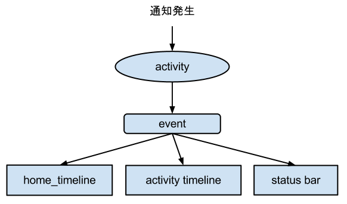

Writing mikutter plugin
Table of Contents
1 はじめに
Rubyでmikutterを拡張する方法についてです。
mikutterはサードパーティの「プラグイン」を追加して、あとから機能を追 加することができます。
本文章では、いくつかの事例を取り上げて、プラグインを作るための大まかな方 法を説明します。
サンプルコードは、 https://github.com/toshia/writing-mikutter-plugin にこのドキュメントの最新版があるので、そこから取得してください。
1.1 想定する読者
一応、これを読むような人は大抵プログラミングの経験があると思いますが、何らかの言語を理解している人なら、Rubyを勉強しながら簡単にプラグインを書くことができると思います。 基本的なプログラミングの概念については説明していません。世の中にはRubyでプログラミングを学ぶことができる文献がいくつもありますので、プログラミング自体の話はそういうのをどうぞ。
1.2 プラグインの動かし方
mikutterのプラグインをインストールするには、 ~/.mikutter/plugin の直下に拡張子 .rb で終わるファイルを置くか、 プラグイン名のディレクトリを作成し、その中に プラグイン名.rb という名前のファイルを設置する方法があります。 後者の方法を使うと、gitなどでプラグインごとにバージョン管理が容易になりますし、プラグイン自体を複数のファイルに分割することができます。
1.3 プラグインの作成支援機能
mikutterにはプラグインの作成を支援する機能があります。mikutter.rbにはいくつかのコマンドラインオプションがあります。
$ mikutter.rb --help
command are:
generate [plugin_slug] generate plugin template at ~/.mikutter/plugin/
spec [directory] generate plugin spec. ex) mikutter spec ~/.mikutter/plugin/test
1.3.1 雛形の作成(generate)
プラグインを新しく作成するときに、以下の様なコマンドを実行すれば必要なディレクトリを作成し、ひな形ファイルを作成します。
$ mikutter.rb generate test_plugin
これで、 ~/.mikutter/plugin/test_plugin/ ディレクトリが作成され、その中に test_plugin.rb というファイルが作成されます。また、このファイルには最低限のプラグインのテンプレートが書かれています。
# -*- coding: utf-8 -*- Plugin.create(:test_plugin) do end
1.3.2 定義ファイルの作成(spec)
mikutter 0.2からはプラグインに定義ファイルを持たせることが推奨されています。定義ファイルは、プラグインの説明、バージョン、作者、依存関係などの情報を含むファイルで、なければ不適切な環境でプラグインがロードされ、クラッシュするおそれがあります。書式を長々と説明するよりも、これも自動的に生成させることができます。
$ mikutter.rb spec ~/.mikutter/plugin/test_plugin/
引数には、プラグインのスラッグではなく、ディレクトリパスを与えることに注意してください。これを実行すると、対話的に２，３質問されるので、適当に答えましょう。すると、 ~/.mikutter/plugin/test_plugin/spec というファイルが生成されるはずです。 test_pluginは何も内容がないので、specファイルも見所がありません。みっくストア(https://github.com/toshia/mikustore)のspecファイルがこの方法で生成されているので、ちょっと見てみましょう。
--- slug: :mikustore depends: mikutter: 0.2.0.1051 plugin: - settings version: '0.1' author: toshi_a name: みっくストア description: mikutterにプラグインのパッケージ管理機能を追加します。みっくストアに登録されているプラグインはクリックだけでダウンロードできます！
適切な情報が自動的にspecファイルに書き込まれました。もう一度、specファイルを作成するコマンドを実行してみましょう。今度は何も聞かれずにすぐにコマンドが終了してしまったはずです。というのも、対話プロンプトで入力されるような内容は、既に存在するspecファイルに書かれているからです。二度目以降は、依存関係などを更新するだけとなります。
1.4 準備はできた？
プラグインを作成する準備は整いました。早速、いくつかのサンプルプラグインを見ながら、お気に入りのエディタを起動して、mikutterをハックしましょう。
2 特定の時間にツイートする
このセクションでは、特定の時間に定型文をツイートする、botのようなプラグインを作成します。
2.1 コード
# -*- coding: utf-8 -*-
# say "よるほー"
# よるほーの例です。あくまでReserverのデモンストレーション用に作りました。
# なので実戦投入はしないこと。よるほーは自分でタイミングを合わせることにこそ意義があるのです。
Plugin.create :yoruho do
def main
Reserver.new(nextyrhtime){
say_yoruho(Service.primary)
sleep 1
main } end
# 次回のよるほー時間を取得
def nextyrhtime
now = Time.new
result = Time.local(now.year, now.month, now.day, 0, 0)
while result < now
result += 86400 end
result end
# よるほーとつぶやく
def say_yoruho(service)
service.update(:message => 'ておほー') end
main
end
2.2 解説
ほぼすべてのプラグインは、以下のテンプレートから作り始めることになります。
Plugin.create :プラグイン名 do (プラグインの定義) end
Plugin.create は、プラグインをコアに登録します。また、ブロック内でプラグインを実装するための様々なメソッドを提供しています。 この中で変数や関数を定義すれば外のスコープも汚さないので、基本的にはこのブロックの中だけでプラグインは完結させるべきです。
2.2.1 メソッドの定義
ブロックの中は、すぐにPluginのインスタンスの中で評価されます。defで メソッドを定義して、メソッドの内外で呼ぶことができます。例では main と next_yrh_time と say_yoruho を定義していますね。
2.2.2 文字列を投稿する
- Serviceオブジェクト
自動投稿を実現するためには、Serviceクラスのインスタンスを得ます。 Serviceクラスは、Twitter APIのラッパで、ログインしているTwitterアカウ ントの数だけインスタンスがあります。なので、プラグインがこのクラス をnewすることはありません。これを書いている現在では、mikutterは１つのアカウントでしかサインアッ プできないということになっているので、以下のように書けば、Serviceクラ スを得ることができると覚えておいてください。
Service.primary
mikutterはそのうち複垢対応しますが、そうなったらこのメソッドは、現 在アクティブな(選択されている)アカウントのServiceを返します。
- update
Service#update で、ツイートが投稿されます。Service.primary.update(:message => "ツイートの本文")
ツイートの投稿は非同期で行われるので、処理がここで止まるというこ とはありません。
2.2.3 Reserver 予約実行
特定の時間に処理を実行したいことがあります。今回の場合だと、毎日 0:00:00に、よるほーとつぶやくコードを実行したいわけです。そういう 時は、mikutterが提供しているReserverを使います。
String, Time, Integerのいずれかの値を渡します。
Stringの場合はTime.parse()された値が使われ、Timeを渡すと、その時刻 になったら実行します。過去の時刻を渡すとすぐに実行されます。
Reserver.new("10:00"){ 朝10時に実行 }
Integerの場合は、その秒数待ってから実行します。
Reserver.new(30){ 30秒後に実行 }
Reserver.new(HYDE){ 156秒後に実行 }
今のところ、Reserverのブロックは、メインスレッド 以外 のスレッドで実 行されます。非同期処理によるバグには気をつけてください。
2.3 まとめ
ReserverとService#postについて学びました。 Service.primary.post() でツイートの投稿ができます。 Reserverは特定の時間に処理を実行するためのクラスです。
3 特殊なタイムライン
現在のmikutterのUIは、以下のような構成です。
ウィンドウが一つ有り、その中にユーザは任意の個数のペインを作ります。 ペインの中には１つ以上のタブがあり、タブの中身はプラグイン次第です が、基本的にはタイムラインが入っているはずです。
このセクションでは、特殊な抽出条件を持ったタイムラインを作成します。 タイムラインを用いたあらゆるプラグインに応用できる知識です。
3.1 コード
# -*- coding: utf-8 -*-
# mikutterについてフォロイーが言及したら、しばらくTLに入れる
Plugin.create :gossip_detector do
EXPIRE = 300 # 5 min
gossip_users = {}
tab :gossip_detector, 'Gossip Detector' do
set_icon MUI::Skin.get("timeline.png")
timeline :gossip_detector
end
# ツイートの受信、振り分け
onupdate do |service, messages|
timeline(:gossip_detector) << message.select { |m|
if m.to_s =~ /mikutter|みくった/
gossip_users[m.user] = Time.now + EXPIRE
true
else
gossip_users.has_key?(m.user) and gossip_users[m.user] > m[:created]
end
}
end
end
3.2 解説
このプラグインは、タイムラインをひとつ作って、フォロイーが mikutter に ついて何か言及したら、そのツイートをそのタイムラインにも表示します。 これだけだと、現在 mikutter に標準で入っている extract plugin と同じで すが、このプラグインはその人のツイートを、マッチしたツイートから5分間 の間は、無条件にタイムラインに入れます。
最初に mikutter の名前を出して、あとでツイートを小分けにして mikutter について言及しているかもしれないからです。そんなことないかもしれませんが、こんな変なフィルタも書けるんだよというデモなので勘弁して下さい。
3.2.1 イベントの待受
ユーザやTwitterから何かしらの入力があれば、mikutter内ではイベントが発 生します。ほとんどのプラグインは、このイベントを受け取って何かを実行す ることで、目的を達成します。 Plugin.create のブロック内に、以下のように書けば、イベント event が 発生したときに 処理 が実行されます。その際、引数は params にセット されます。
onevent do |params| # 処理 end
onevent は、 on_event と書いても event を待ち受けます。イベ ント名が長いなど、つなげて書くと読みづらい場合は、間にアンダーバー を入れるパターンを使ってもいいかもしれません。 引数は、イベントによって異なります。 mikutter プラグインの開発にとって イベントはとても重要なものですが、数が多いので、このあと出てくるぶんに ついても逐一解説はしません。各イベントについて知りたい場合は、RDocの イベント・フィルタリファレンス http://mikutter.hachune.net/rdoc/Plugin.html を参照してください。ただし、これが mikutterのすべてのイベントを網羅しているわけではありません。プラグ インが新しい種類のイベントを定義することができるからです。
3.2.2 タブとタイムライン
UIの定義を見てみましょう。このプラグインは、一つのタブを追加して、そのなかに一つのタイムラインがあるという、最も標準的なUIを持っています。 タブを作成するには、tabメソッドを使います。
tab :gossip_detector, "Gossip Detector"
第一引数はタブを区別するための一意な名前、第二引数はタイトル、具体的にはタブにフォーカスを合わせた時に出てくるチップヘルプのテキストを指定します。これだけでタブは表示されます。次にタイムラインを用意しましょう。上のコードにブロックを与え、少しばかりコードをかいてやります。
tab :gossip_detector, 'Gossip Detector' do
set_icon MUI::Skin.get("timeline.png")
timeline :gossip_detector
end
タイムラインを作成しているのは三行目です。引数はタイムラインを識別するための一意な名前です。例ではタブと衝突していますが、タブとタイムラインのように、種類が違うウィジェットの名前がかぶっても問題ありません。 二行目のset_iconは、タブのアイコンを設定しています。画像ファイルへのパスか、Web上のURLを使用することもできます。
- タイムラインにツイートを追加する
作成したタイムラインを表示することは出来ました。次に、ツイートを タイムラインに追加する方法です。これは簡単です。timeline(:gossip_detector) << Message
timelineメソッドに先ほど作成した時と同じ名前を指定してやれば、タイムラインのインターフェイスオブジェクトが取得できます。 それに<<演算子で、Messageかその配列を渡せばそのツイートをタイムラインに追加できます。
Messageについては、結構複雑なので後述します。今回の例では、 Message#user を使って、ツイートしたユーザを取得しているのと、 Message#[] の :created (投稿日時)を取得しています。
この情報を元に、mikutterの言及があれば今後5分間だけツイートを抽出 するフィルタを実現できるわけです。 少し実装を変えれば、他のツイッタークライアントではできないような 複雑なフィルタを比較的簡単に実装することができるでしょう。
3.3 まとめ
イベントと、タイムラインの作り方について学びました。 イベントは、onXXXで定義し、mikutterやプラグインが発生させたイベントをトリガーに起動します。 tabはタブの作成、timelineはタイムライン作成のメソッドです。 既に作成したタブやタイムラインと同じ名前を指定すると、既に存在するオブジェクトが取得できます。
4 キーワードミュート機能
mikutter標準のミュート機能は、すべてのタイムラインからツイートを非表示にします。このセクションでは、キーワードミュートを実現するために、イベントが発生する前にその内容を編集・削除するためのイベントフィルタ機能、またそれを単体で使って、プラグイン間通信を実現する方法について解説します。
4.1 コード
今回は、特定の単語の入ったツイートを非表示にします。
# -*- coding: utf-8 -*-
Plugin.create(:mute_word) do
exclude_words = ["政治","原発"] # フィルタする単語
filter_show_filter do |msgs|
msgs = msgs.select{ |m| not exclude_words.any?{ |word| m.to_s.include?(word) } }
[msgs]
end
end
4.2 解説
4.2.1 イベントフィルタ
- イベントの引数を編集する
プラグインがツイートを取得するためにイベントを使用していることは前のセクションで触れました。今回は、イベントの発生時にそれを捕まえて、引数を書き換えることができる「イベントフィルタ」を使用します。フィルタは、Plugin.createのブロック内で以下のように宣言します。
filter_update do |service, msgs| msgs = msgs.select{ |m| not m.to_s.include?("政治") } [service, msgs] endイベントが発生すると、イベントと同じ名前のフィルタが登録されていな いか確認して、登録されていたら先にフィルタを実行し、その戻り値を新 たに引数リストにします。なので、普通のイベントと同じように引数を受 け取り、加工した結果を返すことで、イベントの引数を変更できます。
この場合は、updateイベントで配送されるツイートをすべて確認して、 「政治」「原発」というキーワードが含まれたツイートを削除します。 三行目が戻り値ですが、ここに注目してください。引数を配列で返してい ます。こうやって、加工した値を返してやることで、実際にイベントが発 生する時には、該当するツイートが除外されるようになるわけです。
一つ注意しなければいけないのは、戻り値の配列は、必ず引数の数と一 致しなければいけないということです。なぜなら、イベントの引数の数 は、今のところ常に固定だからです。
- イベントフィルタを使ったプラグイン間の通信
イベントを使えば、別のプラグインに情報を伝えることができるという のは前に紹介したとおりです。しかし、イベントは受け取りたい方がイベントを待ち受けて、発信されるのを待つ必要があります。 実際には受け取り側のリクエストに即座に答えるような通信をしたいことのほうが多いと思われますが、 こういった用途にもイベントフィルタを使用します。
まず、イベントフィルタは、イベントが発生していなくても単独で呼び出すことができます。
Plugin.filtering(:update, Post.primary_service, [Instance of Messages...])
この戻り値は、[Post, [Message…]]のような、イベントフィルタの戻 り値そのままです。
次に、イベントフィルタは、イベントが未定義でも作成できます。
filter_plus do |num| [num + 1] end
つまり、直接呼び出されることだけを想定したフィルタを勝手に定義し てしまえば、リクエスト-レスポンス型の通信が実現できるのです。
- mikutterから完全に排除するには
実は、updateイベントのフィルタでは、ホームタイムラインから表示さ れなくなるだけで、他のタイムラインからはフィルタリングできていま せん。この実装のほうがいい場合もあるでしょうが、mikutter上にそも そも表示されないようにしたい場合もあると思います。そのためには、タイムラインが表示前にフィルタを呼び出していれば、 そこで削除することができますね。当然、mikutterはミュートを実現す るために、表示する寸前に以下のようなコードでフィルタを呼び出して います。
Plugin.filtering(:show_filter, message)
つまり、前に書いたupdateフィルタは以下のように書き換えれば、すべ てのタイムラインに影響するようになります。
filter_show_filter do |msgs| msgs = msgs.select{ |m| not m.to_s.include?("政治") } [msgs] endshow_filterは、notifyプラグインからも使用されていて、TLに表示さ れないツイートはポップアップ通知や効果音も鳴らさないようになって います。こんなふうに、他のプラグインが他の用途のためのフィルタを 使用したり、コールバックを登録することもできます。イベントとフィ ルタをうまく使えば、プラグインそれ自身に拡張性を持たせることがで きます。
- mikutterから完全に排除するには
4.3 まとめ
イベントフィルタについて学びました。 filter_XXX でフィルタを作成し、Plugin.filteringでそれらを利用することができます。
5 STOT形式でコピー
STOT(ShareTwitterOnTumblr)は、ツイートをTumblrに投稿するためのフォー マットの一つです。様々なアプリケーションで使われていることもあり、こ の形式でツイートをコピーできると何かと便利です。 このセクションでは、
- ユーザが選択して呼び出せる任意の機能(mikutterコマンド)の追加方法
- ツイートの情報(Message)とユーザ情報(User)のオブジェクトの取扱方
について解説します。
5.1 コード
# -*- coding: utf-8 -*-
Plugin.create(:copy_as_stot) do
command(:copy_as_stot,
name: 'STOT形式でコピー',
condition: Plugin::Command[:HasOneMessage],
visible: true,
role: :timeline) do
message = opt.messages.first
screen_name = message.user[:idname]
Gtk::Clipboard.copy("#{screen_name}: #{message.to_s} [https://twitter.com/#{screen_name}/status/#{message.id}]")
end
end
5.2 解説
5.2.1 STOTについて
まずはじめに、STOTの一例を示します。
toshi_a: 会社でふぁぼるのたのしい [http://twitter.com/#!/toshi_a/status/151947400691449856]
こんなふうに、ユーザのscreen_nameと本文、URL(ツイートのID)の３つの 要素が含まれています。要は、この３つの要素だけ取得して、クリップボー ドに合成したテキストを送れば終わりです。
5.2.2 mikutterコマンド
この機能の呼び出し方法ですが、
- ツイートを右クリックしたときに出るメニュー
- ツイートを選択した状態で設定されたショートカットキーを押したとき に実行される
の2つ方法で呼び出せるようにします。mikutterを使っていれば気づくか と思いますが、右クリックメニューで選択できる項目はすべてショートカッ トキーに割り当てることができます。これは、どちらも登録された 「mikutterコマンド」を参照しているからで、ここに一つ機能を追加する ようにしておけば、ユーザは右クリックメニューから使ったり、ショート カットキーに割り当てたり、好きに使うことができます。
- commandメソッド
- commandメソッドの引数
commandの第一引数には、コマンドの識別名(slug)を渡します。今回のプラグインのような、 コマンドを一つだけ提供するのが目的である場合は、プラグインスラッグと同じにする人が多いようです。 しかし、ある程度の規模のプラグインで、複数のmikutterコマンドを提供する場合は、 分かりやすいスラッグにしておきましょう。第二匹数は Hash を渡します。以下の様なキーがあります。
- name 表示名。コンテキストメニューに表示される内容。String。
- description この機能の説明など。省略可能。
- icon アイコンがあれば。Gdk::PixbufとかString(ファイル名)を指定しましょう。 アイコンを指定しておくと、設定画面や右クリックメニューでそのアイコンが表示されます。 また、ツールバーには、アイコンがないと表示されません。
- condition 実行条件。これの値と===で引数（後述）が比較されます。引数にもよりますが、Proc、Regexp、Stringなどを指定できます。
- visible コンテキストメニューに表示するかどうかのフラグ。falseなら表示されない。 これは例えば、「ひとつ上のつぶやきを選択」のように、右クリックメニューに表示する必要のないものに使う。
- role コマンドを実行できる環境。たとえば、タイムラインが右クリックすると、ここに :timeline が指定されていて、 かつ :condition がtrueなものだけが実行又はコンテキストメニューに表示される。指定できるもののバリエーションは後述。
role と condition が条件を満たして、ユーザに入力によって実行されることになったら、 commandメソッドに渡したブロックが実行されます。ブロックは、 condition と同じ引数を受け取ります。
- コマンドロール
あるmikutterコマンドが実行できるウィジェットのことをロール(role)といいます。 タイムラインや、投稿ウィジェットなど、どこで呼び出されたら実行できるかを設定しておく必要があります。- timeline
- 右クリック
- タイムラインを右クリックした時
- キーボード
- タイムラインにフォーカスがあっている時
ツイートが表示されているタイムラインです。 condition の引数の :messages キーに、 選択されているすべてのツイートが配列で入ります。 TABキーなどでフォーカスインした時にショートカットキーを押す等、 ツイートが選択されずにコマンドが実行された場合は空の配列になります。
ツイートによって動作を変更するコマンドはこのロールです。ほとんどのコマンドは、 これを使うことになるでしょう。
- tab
- 右クリック
- タブバーのアイコンを右クリックした時
- キーボード
- タイムラインなど、タブの子ウィジェットにフォーカスがあるとき
- ツールバー
- タブの内部の一番上
タブです。timelineはツイートに対するコマンドという感じですが、tabはタブ全体に影響をおよぼすようなコマンドに使用します。
標準では、「タブを閉じる」や、「新規ペインへ移動」などがこのロールを使用しています。
- pane
- 右クリック
- なし
- キーボード
- ペインに所属するウィジェット(具体的にはタブ)にフォーカスがあるとき
ペインです。ペインはいくつかのタブの集合体で、ウィンドウ内に横に並べられています。 アクティブなペインを操作するような、UI関連のコマンドでしか使わないでしょう。 最も使用頻度は低いと思われます。
標準では、「左(右)のペインを選択」で使われています。
- postbox
- 右クリック
- なし
- キーボード
- Postbox上でキーボード入力をした時
Postbox(ツイート投稿ウィジェット)です。ユーザがキーをタイプするたびにコマンドを実行します。 一つ注意することは、実行するコマンドがあれば、タイプされた文字は入力されないということです。 例えば、fに「カーソルを右へ移動」のような機能を割り当てると、fを入力できなくなります。 このことによって、Enterに投稿を割り当てることもできます。
標準では、「投稿する」で使われています。
- window
- 右クリック
- なし
- キーボード
- mikutterのウィンドウがアクティブなとき
- ツールバー
- ステータスバーの右下 (0.2.1で未実装)
ウィンドウです。どこでも実行できるようなコマンドに設定します。まだ実装が完全に終わっておらず、 想定外の動作を刷ることがあるかもしれません。mikutter 0.2.1では、まだ使用されていません。
今後、「設定」や「コンソールを開く」などが、このロールを使う予定です。
実は、この他にもプロフィール関連のロールがあるのですが、それはプロフィール拡張プラグインを書くときに説明したいと思います。
- timeline
- コールバックの引数
condition に指定された無名関数や実行ブロックには、以下の様な構造体が渡されます。Plugin::GUI::Event = Struct.new(:event, :widget, :messages)
- :event
- イベント呼び出し元。標準では、 :keyboard か :contextmenu か :toolbar
- :widget
- 入力を受け取ったウィジェット。例えばtimelineロールなら必ずタイムラインのインスタンス。
- :messages
- タイムラインに入力があった場合、イベントが発生した時選択されていたツイート。 複数選択されていることがあるので、1つしか選択されてなくても配列。 何も選択されてなければ空の配列。
- commandメソッドの引数
6 システムメッセージの利用
mikutterを使っていると、mikutter_botというアカウントのツイートとしてシステムメッセージがホームTLに入ることがあります。 このセクションでは、このメッセージをプラグインから表示して、ユーザに情報を提示する方法と、フィルタリングする手段について学習します。
6.1 コード
# -*- coding: utf-8 -*-
Plugin.create(:time_signal) do
defactivity "hour_signal", "時報"
now = Time.new
time = Time.mktime now.year, now.mon, now.day, now.hour
def next_hour(time)
time += 3600
notice "next hour #{time}"
Reserver.new(time) {
activity :hour_signal, "#{time.hour} 時です"
next_hour(time)
}
end
next_hour(time)
end
6.2 解説
6.2.1 アクティビティとは
アクティビティは、mikutter 0.2から追加された仕組みで、mikutter上やTwitter上で起こった通知情報を統合管理する仕組みです。

まず、何らかのプラグインがactivityメソッドを使って通知を発生させます。その通知はactivityプラグインが受け取り、 :modify_activity というイベントを発生させます。このイベントを受け取って、ホームTLやアクティビティタブに通知が表示されるのです。
6.2.2 通知の種類
通知には、お気に入りとかDMとか、はたまたエラー通知とか、種類があります。今回は時報のための hour_signal という通知を定義しています。
defactivity "hour_signal", "時報"
とはいっても、普通は最初から用意されている system という種類の通知を使うので、その場合は defactivity を使う必要はないです。
6.2.3 実際に通知を発生させる
通知を発生させるのはごく簡単です。例のコードでは、以下の部分です。
activity :hour_signal, "#{time.hour} 時です"
これで、「x 時です」と、毎時間通知されるようになります。しかしこのプラグインを実際に使うと、タイムラインには表示されず、アクティビティタブにしか表示されません。理由は簡単で、「設定」の「アクティビティ」で、時報をTLに表示する設定がデフォルトで無効になっているからです。設定でこのチェックを入れるとTLに表示されるようになります。
どうしてもホームTLに表示したい場合があるでしょう。その場合、Plugin.callで無理やりシステムメッセージを挿入する古い方法の代わりに、 system 通知を使いましょう。これは、種類を分けるまでもない一般的なシステムメッセージのために予約されており、デフォルトでTLに表示されるようになっています。もちろんユーザがTLに表示しないように設定できるので、プラグインがアクティビティの仕組みを使えば、ユーザは通知をミュートすることができます。
7 終わりに
mikutterは、ほとんどすべての機能がプラグインで実装されていることからも分かる通り、プラグインで柔軟に機能が追加できるようになっています。 今回は、いくつかの簡単なプラグインを実装する方法を紹介しました。これらを組み合わせれば、ある程度いろんなプラグインを作成できるでしょう。
7.1 プラグインを公開する
作ったプラグインを公開すれば、他の人がmikutterでその機能を利用できるようになります。mikutterでは、githubにプラグインを公開することを推奨しており、現に多くのプラグインはgithubに公開されています。
プラグインを管理するプラグインも現在開発が進んでいます。みっくストア です。これはまだ始まったばかりのプロジェクトで十分な機能はありませんが、うまく行けばmikutter上でプラグインのダウンロード・インストールが可能になるでしょう。現在既に、自分のストアを公開できるようになっています。
また、mikutter wikiにもあなたの公開したプラグインを掲載してみましょう。mikutter wikiは、現在唯一機能しているプラグインリストです。githubだけでは、mikutterプラグインをだらだら眺めることができないので、気づいてもらえないかもしれません。
7.2 他のドキュメント
mikutterは常に進化しており、このドキュメントも追随はしていますが、個々に書いていることが全てではありません。最後に、プラグインを書く上で参考になる資料をいくつか紹介しておきます。
RDoc http://mikutter.hachune.net/rdoc/index.html を見れば、開発版で、どういったクラスやメソッドが使用できるか確認することができます。 完璧ではありませんが、主要なものや最近書かれたものについては、ドキュメントが存在します。
Redmine http://dev.mikutter.hachune.net/ を参照すれば、最近どんな変更が加わったのかを知ることができますし、あなたが発見したバグを報告することもできます。
mikutter開発日記 http://mikutter.blogspot.com/ は、ある程度まとまった情報を取得するのに便利です。
最後に、「Writing mikutter plugin」の最新版は、 https://github.com/toshia/writing-mikutter-plugin に公開されています。 最新バージョンに対応していますし、冒頭にも書いたとおり、サンプルコードを取得することも出来ます。